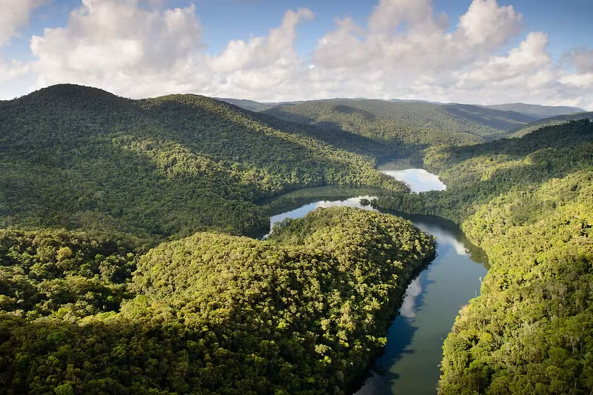
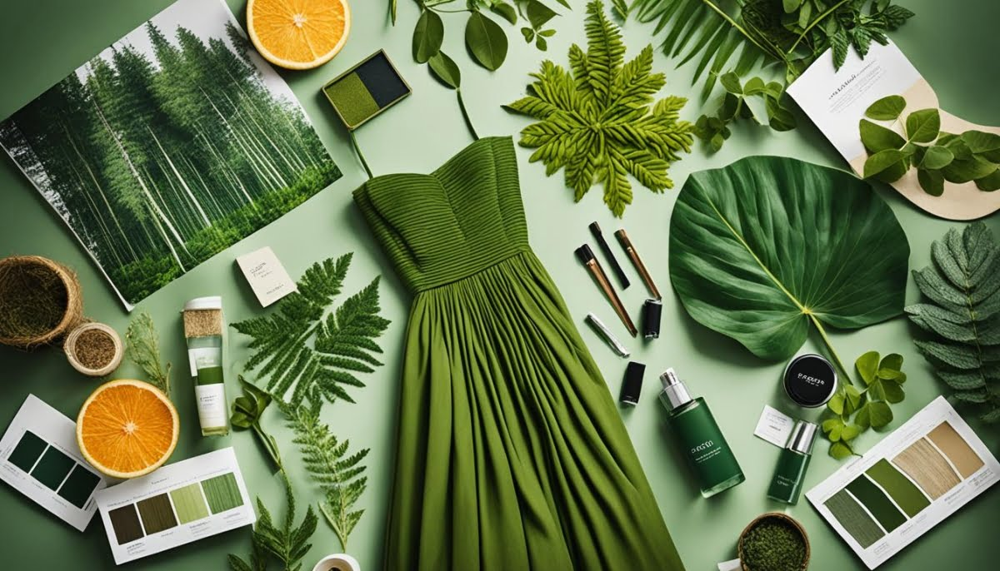
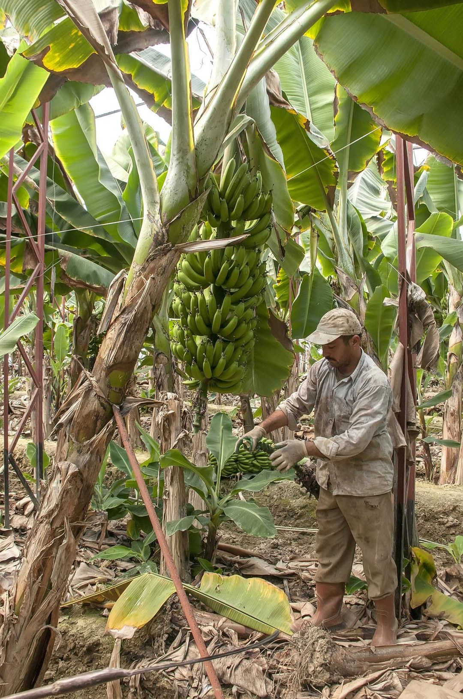

Navegue
Da pesquisa à prateleira

01 · Conectora
HUB
Como conectamos produtores, marcas e mercado.

02 · Ciência
P&D
Da fibra bruta à tecnologia aplicada.

03 · Vitrine
Marketplace
Moda, casa, saúde e construção ecológicas.

04 · Propósito
Impacto
Renda justa, geração de trabalho e menos plástico.